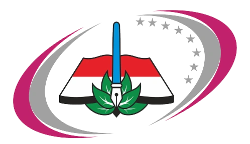

Rilis Call Center, Web dan Sosial Media SPMB 2026
Rilis Nomor Call center, Web dan Sosial Media Resmi SPMB SMKN1 Bondowoso

Memuat... 0%
Sistem Penerimaan Murid Baru SMKN 1 Bondowoso
Satu sistem, Satu informasi
“Akses Informasi Lebih Mudah dan Transparan” Kami memahami bahwa memilih sekolah adalah langkah besar. Oleh karena itu, Portal SPMB SMKN 1 Bondowoso dirancang sebagai rumah kendali informasi. Mulai dari jadwal pendaftaran, kuota pendidikan, hingga pengumuman kelulusan, semuanya ada dalam satu laman. Hingga melakukan konsultasi langsung dengan admin pendaftaran secara real-time. Semua informasi yang Anda butuhkan tersedia untuk satu tujuan: diterima!
Memberikan kemudahan akses data bagi calon siswa dan orang tua
untuk persiapan pendaftaran yang lebih matang
.webp)
.webp)
Temukan jalur masa depanmu melalui program keahlian yang
dirancang khusus untuk mencetak tenaga profesional.
.webp)
“Dukung proses belajarmu dengan fasilitas terbaik. Mulai dari laboratorium komputer
berspesifikasi tinggi, studio penyiaran modern, hingga area praktik bisnis yang dirancang
untuk memberikan pengalaman belajar nyata yang akan dipakai bagi seluruh siswa”
.webp)
.webp)
“Pantau dan catat setiap tahapan penting dalam proses seleksi masuk SMK Negeri 1
Bondowoso. Kami merancang alur pendaftaran yang transparan dan sistematis untuk
memudahkan Anda memulai langkah pertama menuju karier impian!”
Rilis Nomor Call center, Web dan Sosial Media Resmi SPMB SMKN1 Bondowoso
Pengisian Calon Murid Baru Wajib Dilakukan Bagi Calon Murid Baru SMK Negeri 1 Bondowoso Sebelum Ke Langkah Pendaftaran
Pengambilan Nomor Antrian Untuk Pengambilan PIN dan Verifikasi Kesehatan Wajib Dilakukan Oleh Calon Murid Sebelum Datang Ke SMK Negeri 1 Bondowoso. Hal ini Dilakukan Demi Menjaga Ketertiban Di Area Sekolah.
PIN Pendaftaran Wajib Diambil Sebelum Melangkah Pendaftaran Dengan Wajib Didampingi Orang Tua Dan Berseragam Sekolah Asal Serta Wajib Membawa Dokumen :
Pertanyaan yang sering ditanyakan
Hubungi kami di nomor call center kami
Presented by :